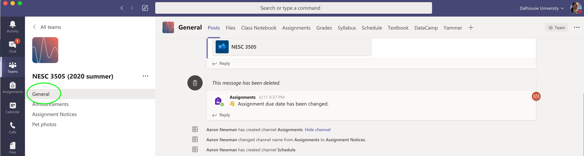

{kind=link}
MS Teams¶
We will use Dalhousie’s Microsoft Teams service as the learning management system (LMS). This will be your central hub for completing the course. We will use some software tools within Teams, including text messaging, video calls for synchronous classes, submitting assignments, and viewing course videos. As well, the class Teams site has links to all external resources, including the syllabus, schedule, and DataCamp tutorials (see below).
An added advantage of using Teams, from the perspective of course learning objectives, is that Teams is an authentic remote working platform. Unlike Brightspace, which you will likely never see again after graduating, Teams is a platform that professional organizations the world over use, especially since the COVID-19 pandemic and the tidal shift to remote working. Prior to the pandemic, in mid-2019, Teams was already being used by more than half a million organizations, and over 13 million active daily users. In a striking demonstrating of the impact of COVID-19 on the transition to remote working, Microsoft reported 32 m active users on March 11, 2020 (already impressive 1 year growth), but 44 m just a week later, on March 18. Major companies like Air France and (obviously) Microsoft use it, as to countless nonprofits and universities, including Dalhousie University. At Dalhousie, Teams has rapidly become the central platform that the university administration runs on and conducts its communications through, including holding meetings.
Once you are registered in the class, you will receive an email invitation to the class Teams site. You will use your Dal.ca netID with Teams. Assignment 1 will take you through onboarding on to the class Teams page.
Assessments and Evaluations¶
All assessments and evaluations are listed on Teams, under the “Assignments” tab. You can also jump to your assignment listing from the “Assignments” icon on the left side bar of the Teams app. This shows the deadline (date and time) for each item. A non-intuitive thing is that you need to “submit” all assessment and evaluation items through their corresponding Assignments on Teams, even if you’re not actually handing anything in. For example, after you complete a DataCamp assignment, you need to go on Teams and click “submit” for that assignment. I know it feels like make-work, but it’s the only way we can track all of your XP on Teams. However, if your actual submission is done some other way, we won’t assess a late penalty if you just forget to click “Submit” on Teams, but otherwise completed the assignment on time.
Tips ‘n Tricks¶
Teams is relatively self-explanatory. But, a few tips:
Like a web browser, Teams has “back” and “forward” arrow buttons in the top left (ish) corner of the window. You can navigate a bit using those, but sometimes they take you back farther than expected.
The best way I’ve found to get back to the “home” screen in Teams is to click on the General channel in the left column, circled in green below: 
Across the top are tabs for most of the things you might want to access. If you window is not wide enough, some of the tabs might appear under a “More” drop-down menu though.
General is a shared chat channel where you can post questions.
You can @-mention anyone in the class in the chat features.
The Files tab won’t be used in the course, but Teams doesn’t let me delete it. You can just ignore it.
The Class Notebook will be used for Demos. Specifically, under the Collaboration Space you will find sections for each week’s demos. You should post your demo, or a link to it if it’s hosted elsewhere, to the appropriate week’s demo section, along with your name.
Links to external sites, like DataCamp, (usually) open by default inside Teams, which may look and act a bit weird. If you want to open an external link in your web browser instead, click on the little “globe” icon in the top right corner, when viewing the web page inside Teams: